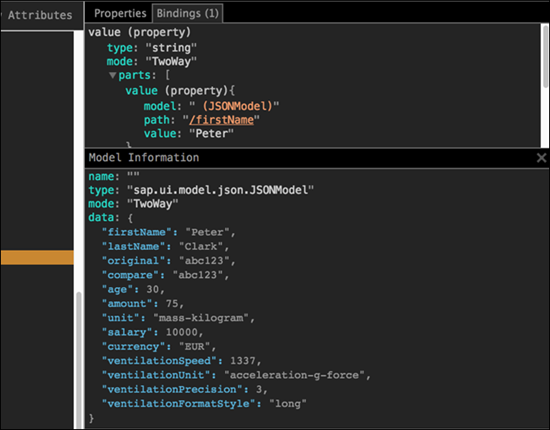

UI5 Inspector
The UI5 Inspector is an open source Chrome DevTools extension that helps app developers to inspect, analyze, and support OpenUI5-based apps. It is supported for apps based on OpenUI5 version 1.28 and higher.
Check out the UI5 Inspector video on YouTube for a quick overview of the most common use cases.
 is not part of the SAP product documentation. Please read the legal disclaimer for video links before viewing this video.
is not part of the SAP product documentation. Please read the legal disclaimer for video links before viewing this video.Key features:
-
Inspect OpenUI5 controls and review their properties, bindings, and data model
-
Modify control properties on the fly and see how this affects rendering and behavior
-
Find relevant framework information for your OpenUI5 app
How to get it?
You can download the UI5 Inspector as a standard extension from the Chrome Web
Store at https://chrome.google.com/webstore/detail/ui5-inspector/bebecogbafbighhaildooiibipcnbngo?hl=en.
Features
Once installed, the UI5 Inspector is available in Chrome DevTools (by choosing F12). It becomes active when an OpenUI5 app is loaded.
Browser Action
Clicking the browser action icon in the address bar provides you with:
-
Information on the used OpenUI5 version
-
Links to the What's New in OpenUI5 section and the OpenUI5 documentation
-
Link to the OpenUI5 website
Control Inspector
This tab shows the structure and nesting of the OpenUI5 controls. You can search and filter for specific controls. You have the options to show/hide the control's namespace and attributes in the tree.
Hovering over a specific branch of the tree highlights the corresponding control in the app.
Additionally, you can right click on any OpenUI5 control from the app and select Inspect UI5 control. This automatically selects the control in the tree and you can review its properties directly.
Properties
In this tab, you can see the properties that have been set for the selected control. Additionally, the inherited properties are also listed.
You can change the values of the properties. The changes will be validated against the framework and rendered on the fly.
Bindings
In this tab, you can see the bindings for a specific control. The number of bindings is displayed in parentheses in the tab title. Selecting the tab gives you more information about individual models, paths and values. The model property holds a link to the corresponding binding file. Clicking on the link opens the Model Information section with details about all values.
Application Information
In this tab, you can see overall information for your app – for example, the exact OpenUI5 version you are running, the version of your browser, and the app URL. The information on the loaded libraries and modules is collapsed by default.